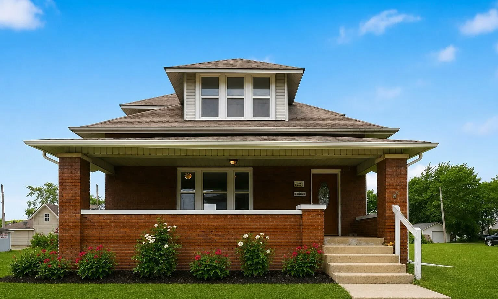
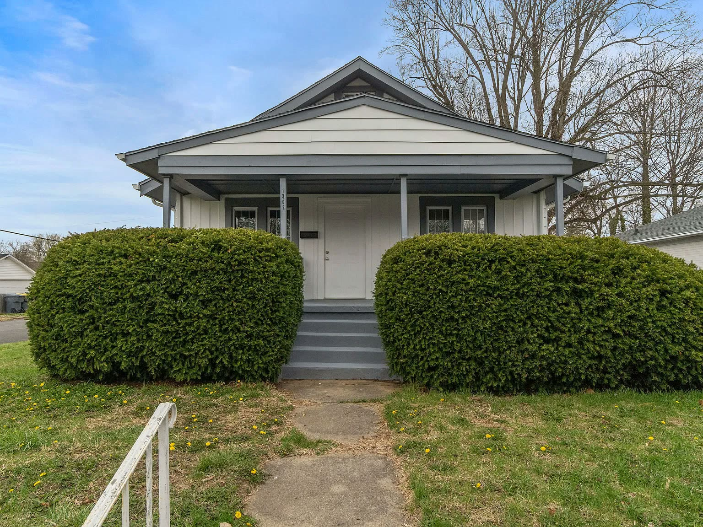
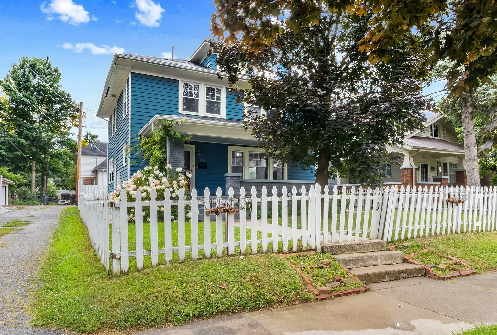
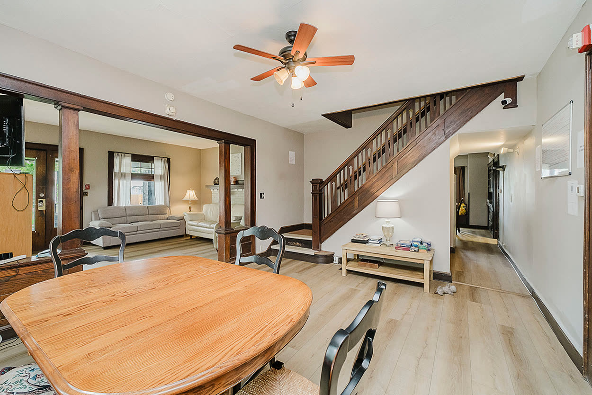
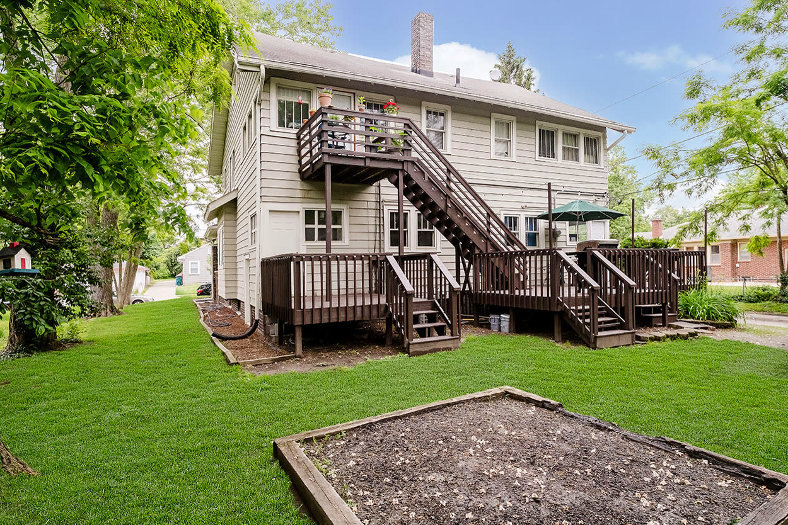

Communities of Hope. Built on Recovery.
A widespread community of structured, peer-supported homes across Indiana, built on clear expectations and a shared commitment to rising together.
The phoenix stands for what we see every day: people rising out of a hard season and building something new. Our homes give them the structure, and the people, to do it.
Phoenix Recovery Network elevates the standard of recovery housing through professionally structured Level II environments that prioritize peer connection, personal responsibility, and community integration. By fostering an atmosphere of empowerment, spiritual growth, and personal transformation, we provide the professional stability individuals need to rise above addiction, reclaim their potential, and achieve long-term recovery.
To expand our footprint across Indiana as a trusted leader in recovery housing by building a highly sustainable, professionally structured, and far-reaching network of homes. We envision a community that champions resident empowerment, drives deep personal transformation, reduces stigma, and inspires resilient communities anchored in lasting wellness and long-term recovery.


Meet the visionaries behind Phoenix Recovery Network.
Phoenix Recovery Network was built on a foundation of shared purpose and an unyielding belief in human resilience. Co-founders Chad Edmonson and Darrell Mitchell joined forces with a singular vision: to establish a stable, supportive environment where individuals recovering from substance use disorders can rebuild their lives from the ground up.
What sets Chad and Darrell apart is a blend of personal truth and professional mastery. Both bring lived experience from their own recovery journeys, allowing them to view the challenges of addiction with radical empathy and deep authenticity. They understand firsthand what it takes to step out of the ashes, pick up the pieces, and rebuild.
That personal foundation is backed by years of industry and business leadership. Darrell has spent years designing, launching and operating some of the most innovative and respected recovery housing programs in the country, setting national standards for peer-led care. Chad is a successful entrepreneur who has built and led organizations run on the principles of recovery, hiring and mentoring people in recovery within his own ventures and proving the real-world power of purpose-driven leadership and community re-entry.
Phoenix Recovery Network is the culmination of their life’s work. By merging their personal recovery milestones with operational and entrepreneurial expertise, Chad and Darrell continue to awaken possibilities, create lasting hope, and inspire community change in the markets they serve.
Seven homes across central Indiana.
Each light marks a Phoenix home, shown within a few miles of where it is to protect residents’ privacy.
Our homes
Seven homes in Indianapolis and Anderson. Each has its own page with photos, rooms and openings. Addresses are shared after a short phone screening.
Indianapolis
3 HOMES LEARN MORE→
LEARN MORE→ LEARN MORE→
LEARN MORE→ LEARN MORE→
LEARN MORE→Anderson
4 HOMES LEARN MORE→
LEARN MORE→
LEARN MORE→
LEARN MORE→
LEARN MORE→More than a sober house with rules.
Anchored in an unwavering commitment to sustainable recovery, Phoenix homes provide structured, monitored residences with house leadership, regular testing, and set expectations. We’re a residence, not a treatment program, so residents keep their own outpatient care.



Clear standards make a home work.
Every resident agrees to them, and every Phoenix house lives by them.
Supporting someone you love?
You’re welcome to reach out on their behalf. We’ll explain how the homes run, what we expect of residents, and what the next step looks like, with no pressure and in confidence.
Talk with our teamReferring a client?
Treatment centers, counselors and case managers can contact us directly about openings, fit and discharge timing. We respond within one business day.
Make a referralFrom first call to move-in, usually within days.
Apply now.
Applications go straight to our team and are kept confidential. Family members and referring professionals are welcome to call or email us directly.